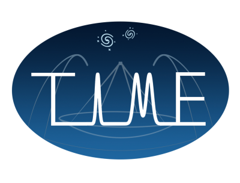

This repo contains code that is a part of the TIME collaboration.

Logo by Guochao (Jason) Sun.
hotspot
Code for driving a cable-driven parallel robot for mapping beams on surfaces.
The robot moves and controls switchable thermal infrared sources to scan a 2D x-y plane, and is capable of absolute accuracy at the <3 mm level over a workspace ~0.40m x 0.40m.
Running
Run python main.py -h for the docstring describing the command line interface.
Example
python main.py ./data/input/geometry/frame.csv ./data/input/profiles/circle.csv
Other Documentation
See the HOWTO.
Contributing
Testing
Testing is accomplished with pytest. Passing tests are a prerequisite for committing code, and new code should come with new tests.
To run the test suite defined in the tests dir, change dir to the toplevel dir of the repo and execute
pytest
Pushing changes
If you need push permissions, message me. Otherwise, you may fork, create a new branch with your changes, and fill out a Pull Request to have the changes reviewed and merged in.